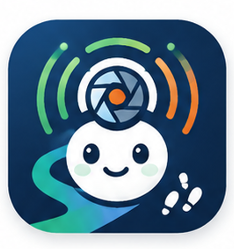
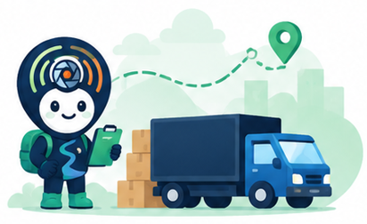

↗이번 배차
운행 준비출발지인천 물류센터 A동인천광역시 중구 서해대로 123
도착지서울 동부 물류센터 B동서울특별시 성동구 물류단지로 45
A하역장 도착 예정14:00

운송 현장 암묵지의 디지털 자산화

당신의 경험이 운송 현장 암묵지의
디지털 자산이 됩니다.
A게이트 혼잡 구간을 피해 안내합니다.
관찰한 신호와 조치만 간단히 남겨주세요.
마이크를 눌러 음성으로 답변하거나
아래 버튼을 선택하세요.
현장에서 축적된 신호와 판단기준을 찾아
다음 운행에 활용할 수 있습니다.
차량 간격과 도크 준비 표시가 함께 지연되면 B게이트 운영 여부를 먼저 확인합니다.
배수로 물이 노란 표시선을 넘으면 적재장으로 바로 진입하지 않고, 지붕 대기구역의 빈 공간을 먼저 확인합니다.
호출등이 두 번 점멸하기 전에는 도크로 붙지 않고, B1 대기선 안쪽에서 후진 공간을 비워둡니다.
왼쪽 미러에서 유도원의 형광 조끼가 보이지 않으면 즉시 정차하고, 수신호가 다시 확인된 뒤 후진합니다.
노란 차로 도색이 끊기는 지점보다 먼저 2차로로 진입해야 회전 차량과의 교차를 피할 수 있습니다.
현장을 기록해주세요.오늘의 신호와 대응이
다음 운행의 길잡이가 됩니다.
긴급 신고와 현장 비상 절차를 대체하지 않습니다.
운송자 답변이나 현장 제보가 들어오면 표시됩니다.
현장 제보에는 상황과 암묵지를 함께 기록합니다. 기존 운행 데이터 분석과 관리자 검증을 거쳐 정리한 현장지식만 다음 운행에 제공합니다.